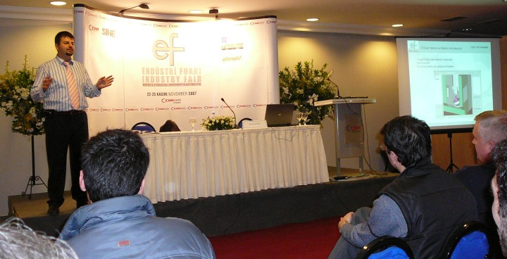
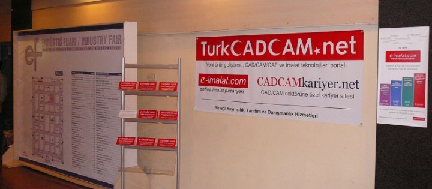

|
Fuar kapsamýnda gerçekleþtirilen Paneller:
22 Kasým 2007 - Perþembe
13:00-15:00 Panel: Türkiye'nin Robot Nüfusu Neden ve Nasýl Arttýrýlmalý?, Moderatör: Prof. Dr. Adil Baykasoðlu
15:15-16:00 Yalýn Üretimin Uygulanmasý, Yaman Angay
16:15-17:00 Kalite Yönetiminde Ýleri Teknikler, Bülent Cerit
17:15-18:00 Radyo Dalgalarýný Kâra Dönüþtürmek: RFID Sistemleri Melda, Bilal Göknel
23 Kasým 2007 - Cuma
14:15-15:45 Panel: Bir Üretim Yönetim Sitemi Olarak KANBAN, Moderatör: Prof. Dr. Bülent Durmuþoðlu
16:00-16:45 Daha Ýyi Ürün Nasýl Tasarýmlanabilir?, Ýlker Uludað
17:00-17:45 Konveyör Seçiminde Dikkat Edilmesi Zorunlu Hususlar, Yaman Angay
24 Kasým 2007 - Cumartesi
13:00-15:00 Panel: Mekatronik Mühendisliðinin Önlenemeyen Yükseliþi ve Türkiye Uygulamalarý, Moderatör: Dr. Hayrettin Karcý
15:15-16:00 Makinelerde Görme Sistemleri, Aytül Erçil
16:15-17:00 Proses Endüstrisinde Enstrüman Seçimi, Lütfü Bilgen
17:15-18:00 CAD/CAM Sistemlerinde Son Geliþmeler, Barýþ Kuldaþlý

CAD/CAM Sistemlerinde Son Geliþmeler, Barýþ Kuldaþlý
25 Kasým 2007 - Pazar
14:15-15:00 Ýmalat Yönetiminde Nirvana: Yalýn Altý Sigma, Halefþan Sümen
15:15-16:00 Otomasyon Yatýrým Projelerinin Yönetimi, Metin Çelenk
16:15-17:00 Otomasyon Sistemlerinin Yenilenmesi, Metin Çelenk
Daha
fazla bilgi için:
EF 2007 Fuarý'ný destekleyen yayýnlar arasýnda yer TurkCADCAM.net (Sinerji Yayýncýlýk) standý: 2. Hall 2-A16'da yer aldý. Ayrýca 1. Hall giriþindeki poster ve broþürlerle de, TurkCADCAM.net, e-imalat.com ve CADCAMkariyer.net tanýtýmlarý etkili bir þekilde yapýldý.

Standýmýzda tanýtým için gönüllü olarak destek veren TurkCADCAM Grubu üyelerinden Özcan Güleçin ve Volkan Özgül'e teþekkür ederiz;
|